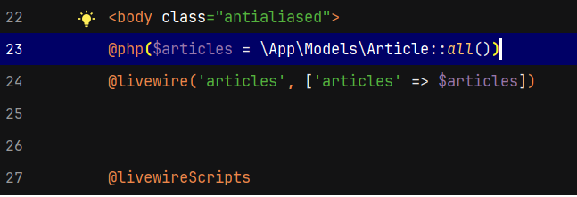
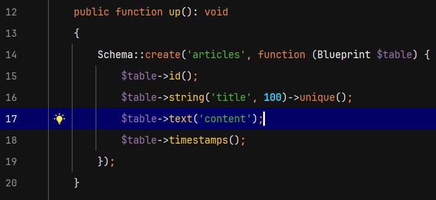
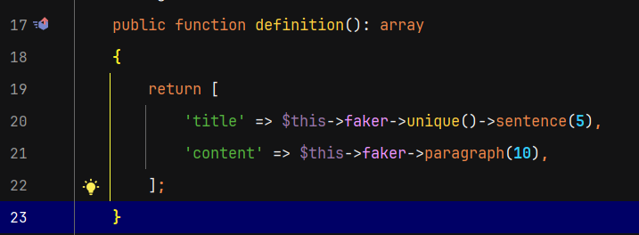
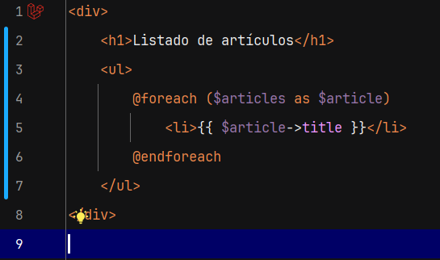
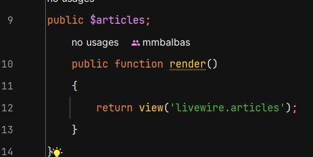
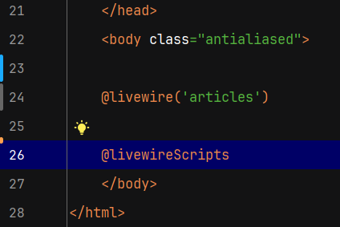
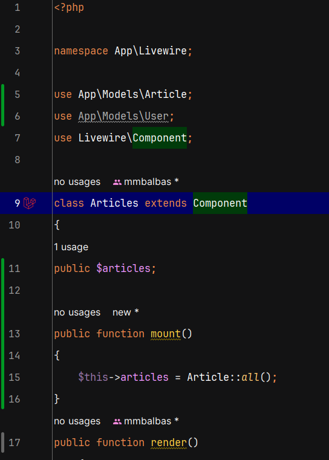
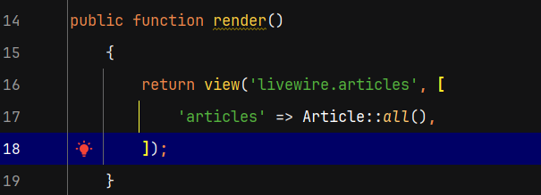

Antes de empezar a trabajar con las propiedades de un componente debemos configurar nuestra base de datos en el archivo .env. Los *** indican la contraseña privada de cada usuario y el nombre de la DB es, en mi caso lw_app

Para definir una propiedad dentro de un componete debemos ir a su clase y definirla como cualquier propiedad de su clase de php.
Nos dirigimos a la clase Articles.php y creamos la propiedad public $h1 = 'Lista de artículos'; cuya condición indispensable es que sea pública para que se a accesible desde la vista. Una vez creada e invocada desde la vista articles.blade.php con {{ $h1}} la ejecutamos y vemos que se renderiza el contenido
Es importante no guardar información sensible en la clase ya que será accesible desde la vista
También podemos modificar el contenido de la vista desde resources/views/welcome.blade.php pasando como segundo parámetro un array en el que indicamos el elemento a modificar y como segundo parámetro del array el nuevo contenido
El código sería: @livewire('articles', ['h1' => 'Listado modificado desde la vista welcome']) y se muestra el nuevo mensaje ya que se sobreescribe el mensaje
Siempre que queramos pasar propiedades de estas formas debemos, obligatoriamente, haberlas definido en la clase.
Esta sintaxis reconoce valores de php como operaciones como @livewire('articles', ['h1' => 1+1]) que devuelve 2
La clases también se pueden modificar con la sintaxis de eteiquetas mediante atributos con la sintaxis <livewire:articles h1='nueva modificación' />
Para que se reconozca el php con esta sintaxis sería: <livewire:articles :h1='1+1' /> usando los : , de manera similar a como funciona VueJs
Todo esto se hace raramente para definir un título
Borramos el $h1 nde la clase y definimos el título de forma manual para posteriormente obtener los valores de los títulos desde la DB
En resources/views/livewire/ articles.blade.php escribimos <h1>Listado de artículos</h1>
Ahora queremos pasar la variable $articles por la directiva del archvo resources/views/welcome.blade.php por lo que tenemos que difinirla dentro de la directiva @php(). Tengo que crear el modelo mediante consola con php artisan make:model Article -mf con m para que cree la migración y f para que cree el factory.
Agregamos el namespace completo del modelo que acabamos de crear App\Models\Article
Agregamos los campos title de tipo string y content de tipo test
Ahora en el factory vamos a definir el título como una oración aleatoria y el contenido como un párrafo aleatorio
Com ya está configurada la DB ejecuto en consola php artisan migrate para ejecutar las migraciones.
Con php artisan tinker arranco Tiker y genero los seeds mediante Article::factory()->count(10)->create
Imprimo los elementos de la DB en resources/views/livewire/ articles.blade.php teniendo en cuenta que solo deben tener un elemento padre que es el div y los imprimo en una ul mediante @foreach()
Al actualizar me da el error de que la variable $articles no está definida por lo tengo que inicializar la propiedad en la clase app/Livewire/ Articles.php
Lo anterior sería una forma de hacerlo, pero lo ideal sería obtener los datos de la DB directamente desde la clase app/Livewire/ Articles.php. Para ello haremos los siguientes cambios en este archivo y el resources/views/welcome.blade.php qudará de la siguiente forma:
y el app/Livewire/ Articles.php quedará de la siguiente forma usando el método mount() que funciona como constrctor:
En muchos casos el método mount() es muy útil, pero en este caso lo más sencillo es pasarlo directamente por la función render de la siguiente forma y el resultado es:
